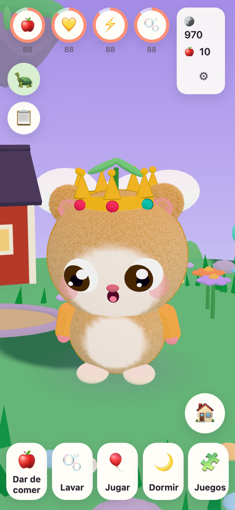
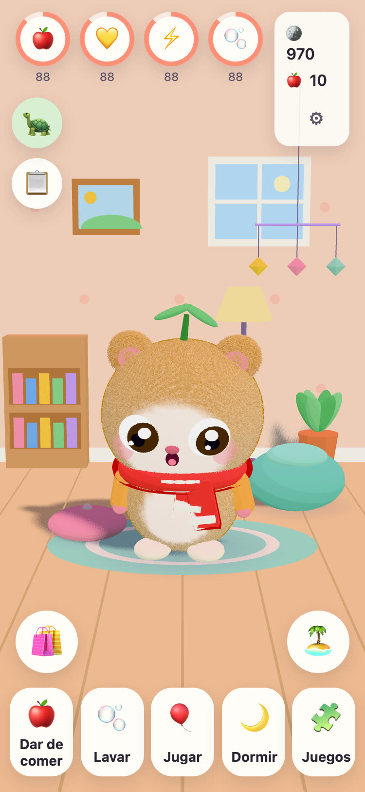
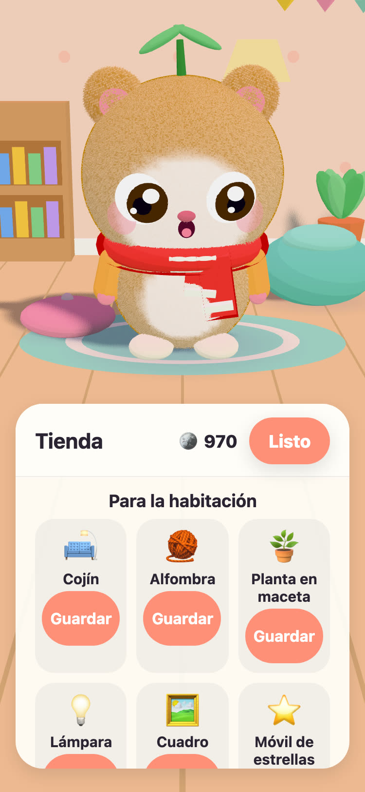
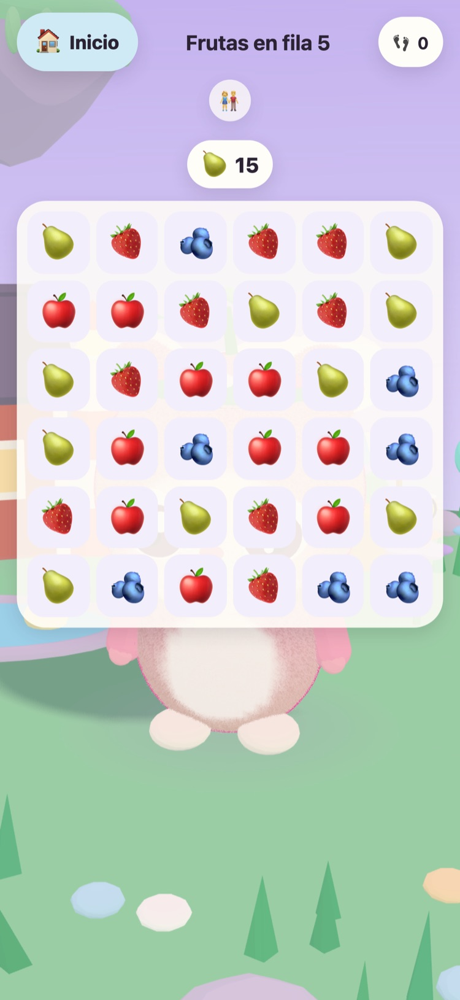

JUNOLittle Worlds
Haz nacer a un Juno, cuídalo y resuelve puzles tranquilos que despiertan una isla flotante. Un juego tranquilo para niños de 6 a 10 años, en iPhone y iPad.
¡Hola! He encontrado tres huevos calentitos. ¿Cuál es el tuyo?
- Sin anuncios
- Sin rastreo
- Sin cuenta
- Sin temporizadores ni presiones




Un amiguito para él solo
El Abuelo Tintin, la vieja tortuga que cuida de la Isla Pradera, ha encontrado tres huevos calentitos. Tu hijo elige uno y le pone nombre a lo que nace. Desde ese momento, el Juno es suyo: para darle de comer, bañarlo, jugar con él y acostarlo a dormir la siesta.
-
Elige un huevo
Tres huevos calentitos, tres colores. Tu hijo elige uno y lo ve nacer.
-
Ponle nombre, quiérelo
Comer, bañarse, jugar y dormir la siesta. El Juno muestra cómo se siente y crece a medida que crece su amistad.
-
Despierta la isla
Cada estrella de los puzles devuelve la luz a la Isla Pradera, hasta que las flores, las abejas y los patos vuelven a casa.
Comer, bañarse, jugar, dormir
Comidas y juguetes distintos, burbujas en el baño y un Juno que muestra cómo se siente. Las necesidades bajan despacio y nunca llegan a cero, así que un Juno nunca se pierde.
57 puzles tranquilos
Frutas en fila, Jardín de parejas, y Sonidos de animales y de vehículos con grabaciones reales. Las estrellas dependen de los movimientos, nunca del tiempo, y volver a intentarlo siempre es gratis.
Una isla que despierta
El Jardín de flores se abre con sus abejas, el Estanque de los patos se llena de agua y de patos, y las semillas se convierten en manzanas y fresas en los bancales del huerto.
Una habitación para hacerla acogedora
Las monedas de los puzles y de las misiones del día compran decoración para la habitación del Juno y ropa para ponerse. Nada de la tienda de monedas cuesta dinero real.
Lectura en voz alta
El Abuelo Tintin lee cada frase en voz alta con su propia voz cálida, para los niños que aún no saben leer. Tócalo para oírla otra vez.
Una Zona de padres
Tras un control parental: idioma, lectura en voz alta, sonidos, hora de dormir y un recordatorio amable para descansar. A la hora de dormir, el Juno duerme y los puzles esperan hasta la mañana.
Habla 21 idiomas
El Abuelo Tintin le habla a tu hijo en su propio idioma. Elígelo en la Zona de padres o deja que el juego siga el idioma del dispositivo.
English Svenska Dansk Norsk Suomi Deutsch Nederlands Français Español Italiano Português (Brasil) Polski Русский Ελληνικά Türkçe Bahasa Melayu Kiswahili हिन्दी 日本語 한국어 简体中文
Hecho por un abuelo
JUNO se hizo en Suecia, obra de un abuelo para su nieta: un juego al que le haría feliz verla jugar. El Abuelo Tintin, la tortuga del juego, es él.
Por eso las reglas son sencillas. Nada que presione, nada que engañe y nada que recopile ningún dato sobre tu hijo.
Gratis y sin anuncios
JUNO se descarga gratis y no tiene anuncios, ni rastreo, ni cuenta. Todo lo que hace tu hijo se queda en tu dispositivo. Consulta la página de privacidad.
Un adulto puede comprar JUNO Plus o el Pack de Invierno en la Zona de padres, tras el control parental. Ambos son compras únicas que puedes restaurar y compartir con tu familia.